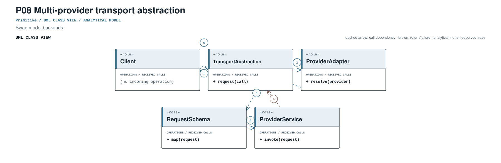
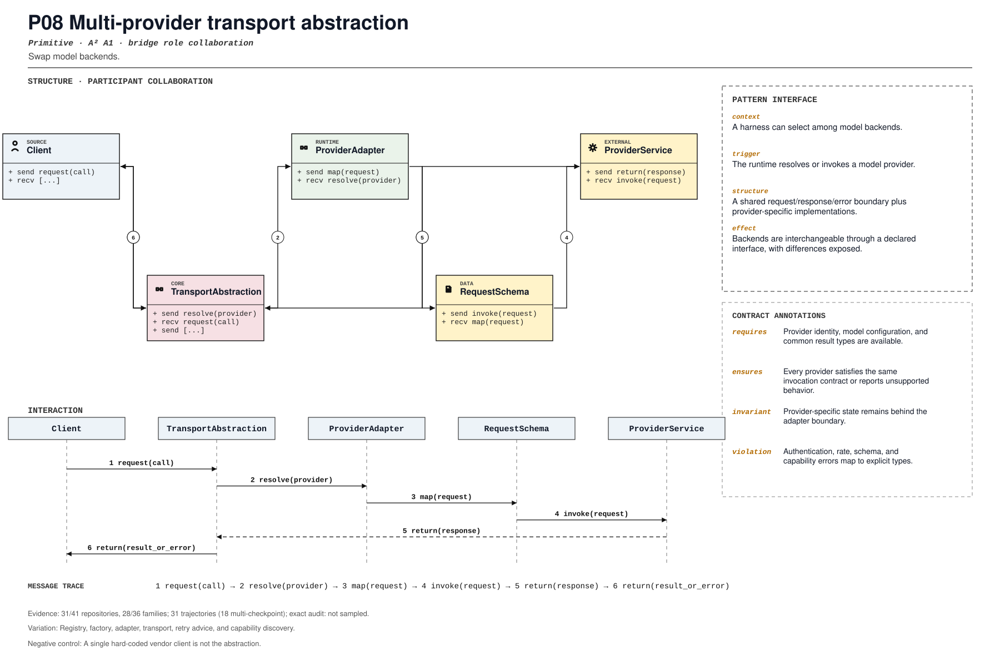

PROMPT SKETCH
Resolve a provider through a common transport contract. Normalize results and errors, report unsupported capabilities explicitly, and never leak provider-specific objects into the loop.Swap model backends.
model_backend_resolutionRECORD STATUSCandidate · v0.1.0The proposed contract drawn as participant roles, received calls, and numbered dependencies.

The same roles and calls as a class collaboration and a numbered message sequence.

Where the mechanism applies. All four dimensions belong to the proposed match, not just its vocabulary.
The obligation that clients, operators, and auditors should be able to rely on.
A single hard-coded vendor client is not the abstraction.
The hot spot is admitted only where the protected semantics survive.
Registry, factory, adapter, transport, retry advice, and capability discovery.
Test two providers, unsupported tools, usage mapping, and error translation.
Did the common interface expand while provider differences stayed explicit?
An illustrative prompt and a small design sketch for the proposed contract. Names and APIs are invented; this is not a repository excerpt.
Resolve a provider through a common transport contract. Normalize results and errors, report unsupported capabilities explicitly, and never leak provider-specific objects into the loop.class Transport(Protocol):
def invoke(self, request: Request) -> Result: ...
def capabilities(self) -> set[str]: ...
def invoke(request, registry):
transport = registry.resolve(request.provider)
if not transport.capabilities() >= request.required:
raise UnsupportedCapability(request.provider, request.required)
return transport.invoke(request.normalized())Illustrative design sketch. The protocol defines substitutability; the registry selects an implementation. This example is a teaching aid, not implementation evidence or a conformance claim.
Up to five public files retrieved by the frozen cue and pinned to the audited commit. A match is a place to inspect, not a confirmed implementation.
src/agents/models/interface.py:150CANONICAL SOURCE02aaif-goose/goosecrates/goose/src/bin/build_canonical_models.rs:102RETRIEVAL CUE03agno-agi/agnolibs/agno/agno/db/in_memory/utils.py:107RETRIEVAL CUE04anomalyco/opencodepackages/ai/src/ai-client.ts:4RETRIEVAL CUE05browser-use/browser-usebrowser_use/agent/service.py:2242RETRIEVAL CUEEach layer answers a different question. Do not substitute retrieval for review.
A concrete source anchor is available for this proposed record. It is one exemplar, not evidence that all repositories—or every contract field—conform.
Review boundary: this candidate and its specification come from an AI-assisted study. Independent human validation remains open.
77.8% of repository families in the frozen panel have at least one current cue, historical cue, or canonical source layer. This is not confirmed prevalence.
Current lexical-cue repositories: 28 / 4186bd29878b30src/agents/models/interface.py:150tests/models/test_reasoning_content.py:25Abstract ModelProvider boundary.
(?i)\b(?:model[_-]?provider|provider[_-]?model|model[_-]?adapter|LLMClient|ModelClient)\bThis expression is a discovery instrument only. A match is a retrieval cue—not a confirmed implementation, pointcut match, or contract proof.